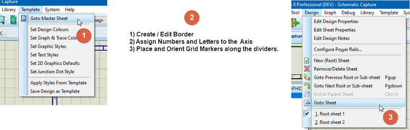
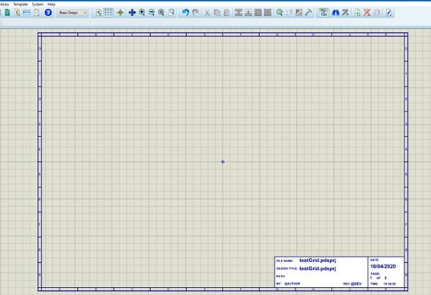
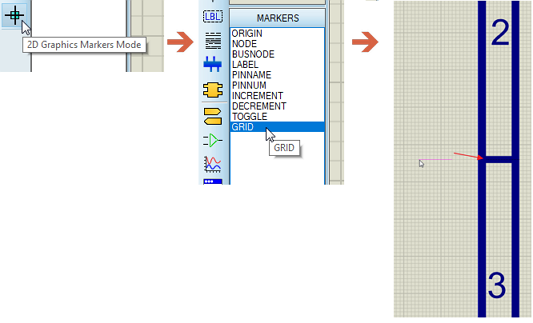
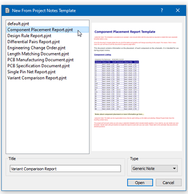
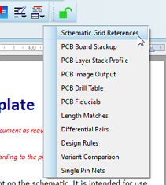

The component placement report list the grid square on the schematic sheet (e.g. A1, C3) where a component can be found. It is typically used in review sessions with schematic printouts.
Create a component placement report requires two steps, namely:
1) Placement of grid markers on the master sheet border.
2) Generation of the report in Project Notes.
The good news is that if you are using one of the Labcenter standard templates which come with a border grid (e.g. Landscape A4) then this step is done and there is no action required. If on the other hand you are using your own template you have a little setup work to do. Bear in mind that you only have to do this once because you can in turn save your border as a Template of your own so it's available to you in future designs.

Basic Procedure for creating a smart grid with a sheet border.
Start by creating a border with numbers on one axis and letters on the other on the Master sheet.

Sheet border with numbers (Y-Axis) and Letters (X-Axis) along with separators
Alternatively, just start a design based on one of our templates of the right size and then modify as normal.
Remember that the border should be created on the Master Sheet so that it is visible on all sheets.
Once the border is in place you need to place and orient grid markers along the separators.
To place a grid marker:
1) Select Marker mode and then the GRID marker from the parts bin.
2) Left click on the editing window to start placement.
3) Use the '+ and '-' keyboard buttons on the num keypad to orient the marker such that it aligns with the separator.
4) Move the marker over the separator and left click again to place.
5) Repeat for the other separators.

Placing a grid marker over the separator between two named cells.
If you can't rotate live just place the marker beside where you want it to go then right click on it and select one of the rotation commands to align it. Finally, right click again and select drag to pick it back up again and move it over the separator.
You are aiming to place a grid marker over each separator on the Y-axis. Then you need to rotate the grid marker so that it aligns with the separators on the x-axis and place a grid marker over each separator. You don't need to place grid markers on all four sides. One horizontal size and one vertical side is enough. Proteus will extend these markers internally across the sheet to slice the sheet into sections and will then identify which components are in each section. This data, along with the section names (A4, C2, etc) is what populates the component placement report.
You may want to save this border as a template at this stage so that you can re-use in future designs. You can do so from the Template menu.
To generate the report simply open the Project Notes module and select the Component Placement Report from the resulting templates.

Component Placement Report selected in Project Notes module.
If you already have a report open in Project Notes you can select New Note from the File menu and then select from the template list. If you want to add the information to a custom report you'll find it available in the Project Data menu for manual insertion.

Adding the data to a custom report.
The table itself is very simple and, for each component in the design, lists the sheet and grid reference where the component can be found. This makes for quick lookup when the schematic is printed out onto sheets of paper.
Note of course that inside the Proteus software you can cross probe using design explorer or use search and tag to quickly zoom in to a part.